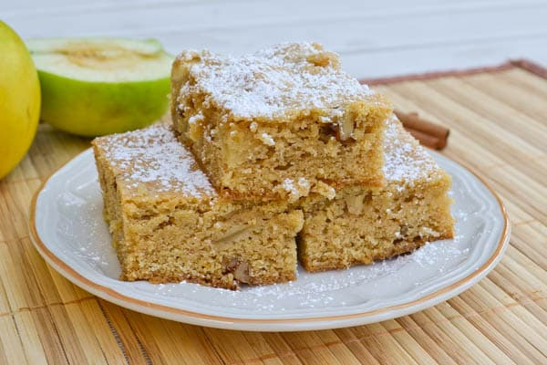

-

Apple Brownies
Ingredients
- Apples - 3, medium size
- Melted Butter - ½ cup
- Sugar - 1 cup
- Egg - 1
- Walnuts - ½ cup
- Flour - 1 cup
- Salt - 1/4 teaspoon
- Baking Powder - ½ teaspoon
- Baking Soda - ½ teaspoon
- Cinnamon - 1 teaspoon
Method of Preparation
Peel, remove the core, and cut the apples. In a bowl, mix butter, sugar and egg. Add the apples and walnut and mix together.
Sift flour, salt, baking powder, baking soda and cinnamon together. Pour into the batter and mix.
Spray a baking pan with non-stick and pour the mixture. Bake at 350°F for 35 minutes. Serve with vanilla ice-cream